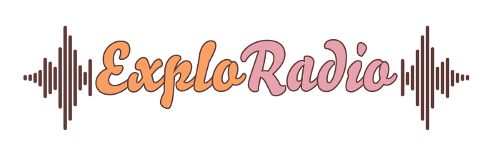
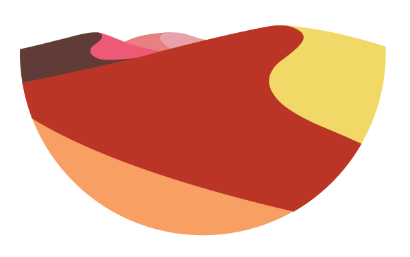
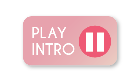

<style type="text/css">
  ion-content.background {
    --background: none;
  background-image: url("../../assets/images/bg.png");
  background-repeat: no-repeat;
  background-attachment: fixed;
  webkit-background-size: cover;
  -moz-background-size: cover;
  -o-background-size: cover;
  background-size: cover;

  );
  }
</style>


<ion-content class="background">

  <div class="ion-text-center"  >
  
  </div>
  <div class="ion-text-center" margin-top="" margin-bottom="">
    

  </div>

  <div  style="background-color: rgba(115,85,82,0.67); padding: 5px">
    <h2 text-center="" style="color: white">
        Dein Audioguide für Namibia
    </h2>
  </div>
  
  <div routerLink="/app/home" margin-top="" text-center="">
    
  </div>

  <div *ngIf="!isPlaying" padding-start="" (click)="play()"  margin-top="" text-left="">
  
</div>

  <div *ngIf="isPlaying" padding-start="" (click)="play()"  margin-top="" text-left="">
    
  </div>
  <audio
          #player
          src="../../assets/images/intro.mp3">
  </audio>

  
</ion-content>
